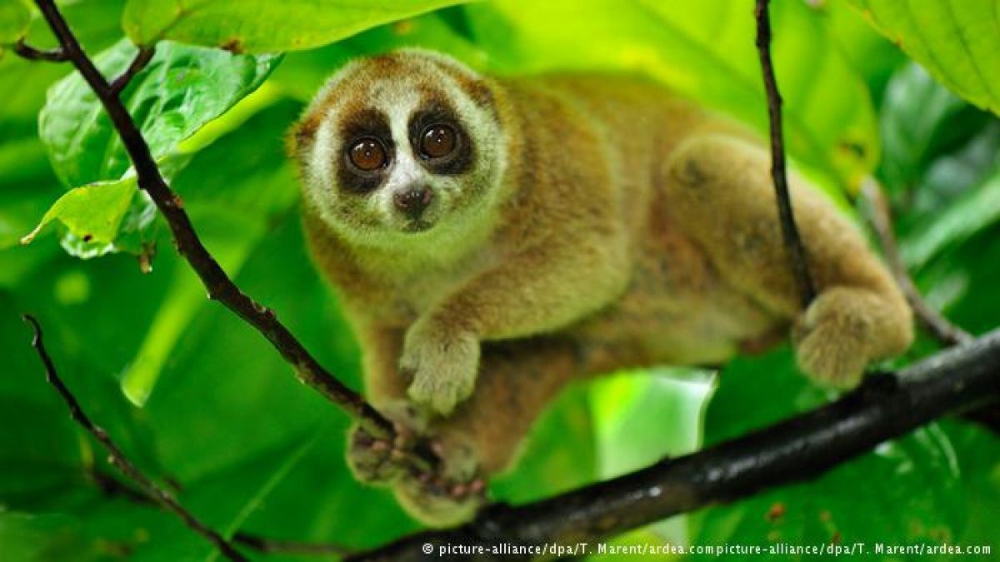
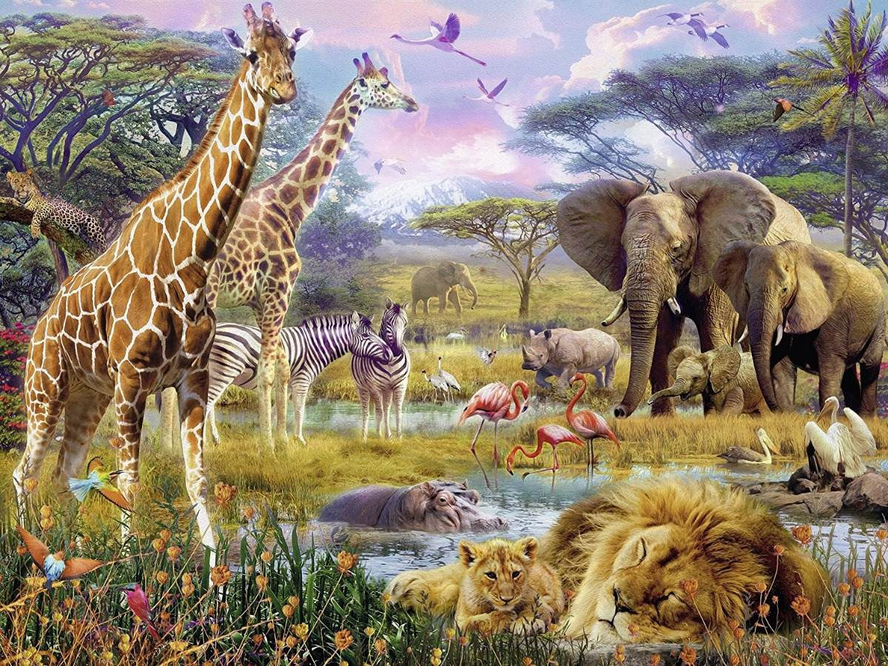
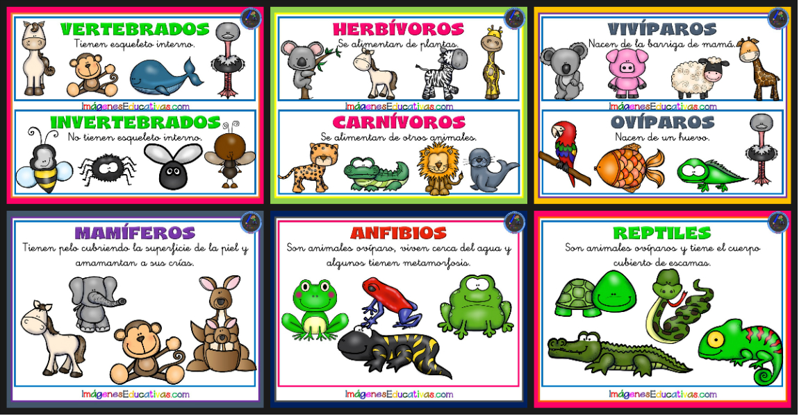
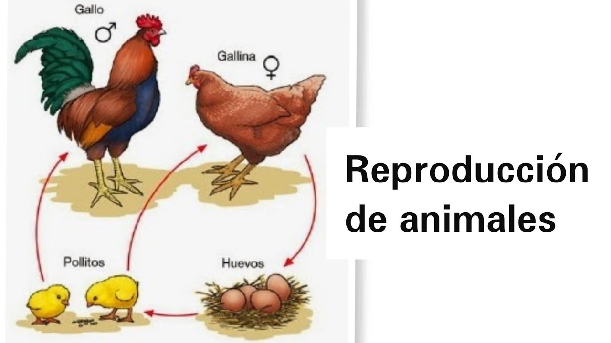

¿Que son los animales?
Un animal es un ser vivo que puede moverse por sus propios medios. Por lo general, dentro de la denominación se incluye a los integrantes del reino conocido como Animalia.Existen diversas características compartidas por la mayoría de los animales, aún con sus diferencias. Los animales ingieren sus alimentos, desarrollan una reproducción de tipo sexual y absorben oxígeno a través de la respiración. Estas son apenas algunas características básicas pero, por supuesto, los animales pueden ser muy diferentes entre sí.

Alimentacion
En la clasificación de las especies del planeta animal, hallamos diferentes formas de reunir a los individuos, esta clasificación puede venir dada por la estructura de la especie, como pueden ser los peces, las aves, los reptiles, etcétera. Asimismo se pueden clasificar por su forma de reproducirse, ovíparos o bien vivíparos, más como ya avanzamos previamente, la clasificación que más nos interesa en el presente artículo es la clasificación conforme su nutrición.
Piscívoros: Los piscívoros son una variación de los carnívoros y es que son los animales que se nutren mediante los peces, así sea cazándolos o bien ya fallecidos. El tamaño de los animales determinará los peces que come.
Insectivoros: Son aquellas especies que se nutren de otros animales, pero pequeños y es que se nutren de ciertos insectos, como las hormigas, los vermes y las arañas entre otros muchos animales.

Tipos de animales:
BÍPEDOS: el vocablo bípedo hace referencia a los animales cuya forma de locomoción esta basada en la utilización de las dos extremidades inferiores de cuerpo. Por ejemplo, las aves, ciertos insectos, etc.
CUADRÚPEDOS: de esta manera se califica a los animales que se trasladan sobre cuatro extremidades o patas. En esta categoría se incluye al jaguar, el perro, la tortuga, entre otros.
VERTEBRADOS: con este término se designa a aquellos animales que poseen columna vertebral, es decir, un esqueleto interno que funciona como soporte del cuerpo. Dicha columna esta compuesta por vértebras, lo que permite flexibilidad en los movimientos. El cuerpo de los vertebrados suele estar seccionado en: cabeza, tronco y extremidades. Por otro lado, esta clase de animales poseen simetría bilateral, es decir, una distribución proporcionada de los órganos que aparecen duplicados.
INVERTEBRADOS: la palabra agrupa a los animales que no poseen columna vertebral y esqueleto interno articulado. Los invertebrados son el conjunto más numeroso de animales sobre la tierra, agrupando al 95% de ellos.
ACUÁTICOS: Como su nombre lo indica esta clasificación agrupa a todos aquellos animales que viven en el agua durante su vida, o parte de ella. Pueden habitar en lugares cercanos a la superficie o bien en el fondo de océanos, mares y ríos.
TERRESTRES: aquí se encuentran aquellos animales que viven en la tierra y se trasladan por la misma. Éstos toman del aire el oxígeno necesario para su respiración. Algunos animales terrestres son: la vaca, el oso panda, el elefante, etc.
HERBÍVOROS: los animales herbívoros son aquellos que basan su alimentación en plantas, hierbas y pastos. Por ejemplo, la jirafa, el caballo, el rinoceronte
CARNÍVOROS: los animales carnívoros, como su nombre lo indica, se caracterizan por basar su dieta principalmente en carne. Esta clase de animales pueden ser carroñeros o depredadores de acuerdo a la manera en que obtienen su alimento. En este conjunto se engloban el tigre, la hiena, el león, etc.
OMNÍVOROS: este término proviene de las palabras de origen latín omnis (todo) y vorus (come), y hace referencia a aquellos animales que se alimentan tanto de plantas como de animales. Dentro de este grupo se encuentran: el oso, la piraña, el cerdo, la zarigüeya, entre muchos otros.

Reproduccion de los animales
Reprodución sexual: Mediante óvulos y espermatozoides, que al unirse forman un cigoto a partir del cual se desarrolla un nuevo individuo.
Reprodución asexual:Se lleva a cabo mediante un solo progenitor y sin células sexuales o gametos. Por ejemplo, una célula de un animal se puede reproducir por bipartición, es decir, rompiéndose en dos. Este tipo de reproducción lo tienen los animales más sencillos como las esponjas, la estrella de mar o la lombriz de tierra..
